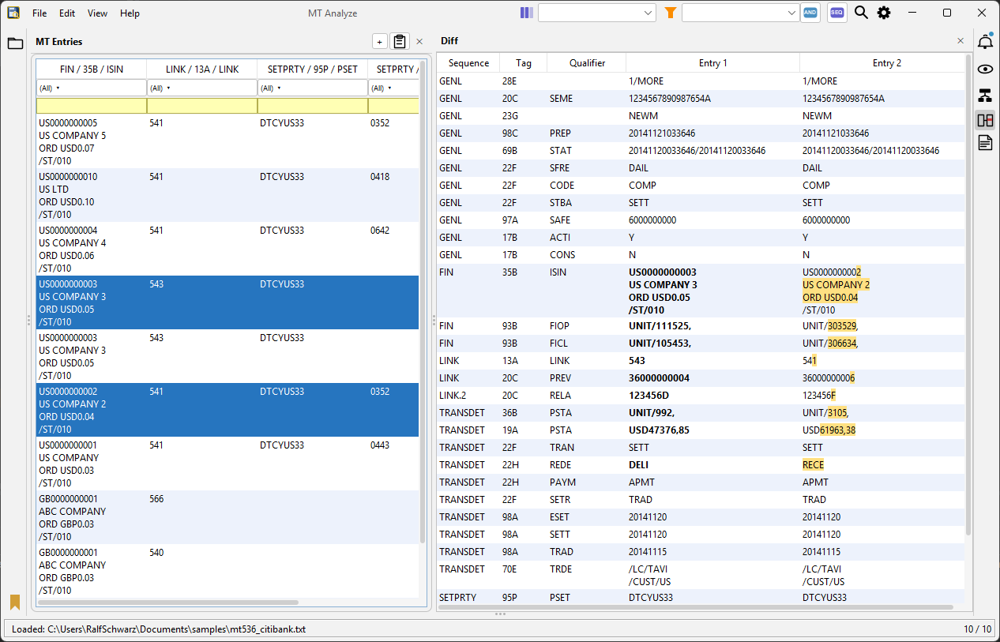

CCP, CSD, triparty agent, internal systems — each a black box, each its own SWIFT channel. The only traces are the messages that flow between them. Load SWIFT MT snippets from logs, exports or test systems as a file — MT Analyze decodes, harmonises and links them lifecycle by lifecycle: the complete business transaction becomes readable.
Java 17+ · Windows · macOS · Linux · VDI · Portable App · No Installation · GitHub or Nexus
Download the JAR and double-click to start. If that doesn't work: javaw -jar MT-Analyze-<version>.jar

SWIFT MT is old. Nobody wants to work with it. But the entire settlement infrastructure runs on it. So here you are — in a T+1 project or migration, having to trace a large number of SWIFT messages produced by legacy or COTS applications, with nothing but basic tools. Finding the needle in the haystack.
Manually analysing and testing SWIFT messages takes days. It slows the project, increases risk, and delays completion.
Analysing historically grown systems is like archaeology. Tags, qualifiers and codes have to be looked up in the SWIFT spec — without tools, every interpretation costs time.
Old mainframe systems still run, but the knowledge is gone. Documentation is outdated or missing. Business logic and population rules must be reconstructed from SWIFT messages and bookings.
Instruction, matching status, confirmation, statement, cash posting — each lifecycle action a different message type, in separate logs. Tracing the connection to the business transaction and following the lifecycle end to end is barely possible manually.
Manual target/actual comparison doesn't capture all fields. Deviations only become visible at go-live — too late.
Thousands of messages, tight deadlines. Finding the relevant cases, understanding and testing them takes hours — hours the project doesn't have.
Handing analysis to consultants or their juniors sounds like a solution — but the work keeps coming back. Business context is missing, questions arise, corrections take time. The bottleneck remains.
Looks like Excel — tables, filters, sorting, copy & paste. Native ISO 15022 underneath. Business experts operate it themselves, no handover needed.
Multiple internal systems, CSDs, triparty agents, CCPs — each participant a different SWIFT channel. All in one unified table, harmonised and decoded.
ISO 15022 Data Field Dictionary SR2025 built in — tags, qualifiers and components with descriptions directly in the table. No SWIFT portal, no detour. Updated annually.
Settlement experts, business analysts, project managers — and developers and testers: What does the system really produce? Is the format correct? Why does field X differ? MT Analyze makes SWIFT MT output directly readable — for debugging, validating and tracing, without detours through logs or the spec.
Everything copyable — cells, rows, entire tables. Data flows directly into Excel or Octane. No detour, no formatting effort.
We bring the tool into the project and show how to apply it in a workshop. Practical experience from real projects flows directly back into development.
How the solution works
How MT Analyze eliminates the analysis and testing bottleneck — step by step.
Load data — immediately a structured table. All fields decoded, all sources harmonised. Block-4 examples from the Clearstream SWIFT guides are enough to start — the app generates the header, every field with context directly visible. No live system needed.
Set filters, show and hide columns, sort — interactively and without preparation. Try out hypotheses on the spot.
Dive into individual messages, chains or diffs. Tags, qualifiers, components with descriptions — the content becomes understandable.
Everything copyable to Excel or Octane. Export diffs as CSV. The next step in the project starts without detour.
Three triggers. Always the same bottleneck.
A legacy system receives a regulatory requirement. A legacy system is to be replaced. A business unit is sold. In all three scenarios, SWIFT messages and bookings must be fully traced. Understand the old first, then validate the new — both with one tool.
What does the legacy system really send — including edge cases? Load production messages, filter, evaluate systematically. No gaps in documentation.
Fields, formats, population rules directly from real messages — not from outdated documentation or assumptions.
From thousands of production messages, filter the relevant edge cases in minutes and export as a test set.
Legacy against new system at field level. Deviations immediately visible. Structured export as a verifiable audit trail.
Check the first real messages of the new system against the baseline. Find breaks before escalation.
Messages from both systems loaded simultaneously — field-level differences, reproducible and documented.
What the solution delivers
For settlement experts, developers and testers — no SWIFT specialist required, no learning curve.
SWIFT MT (ISO 15022) — MT 527, MT 558, MT 569, MT 536, MT 940 — from multiple internal systems, CSDs, triparty agents and CCPs loaded simultaneously. All in one unified table, harmonised and decoded. Transactions in MT 536 appear in the same view as an MT 54x — directly comparable side by side.
Tags, qualifiers and components are displayed with descriptions from the ISO 15022 Data Field Dictionary SR2025 directly in the table — no access to myStandards needed, no lookup in the spec. SR built in, updated annually. An extensible user dictionary adds project-specific meanings for historically grown systems.
Receive, Deliver, Cancel, Reject — the app recognises the transaction type automatically and shows it as an icon directly in the table. Quick filter across all columns: =EUR, ^DE, EUR+USD, 10-20. AND/OR switchable. Hide columns, adjust layouts — and save everything as a profile so the same analysis is always reproducible.
Cells, rows, entire tables — copy directly into Excel or Octane. Export diffs as CSV. The next step in the project starts without formatting effort.
Field comparison between two or more messages — colour-coded, "Differences only" filters to breaks. Semantically: instruction against confirmation, MT 54x against MT 536 — equivalent fields are automatically matched across message types. Messages can be validated against the ISO 15022 standard: mandatory fields, formats, permitted codes. Export as UAT evidence or error log.
Every SWIFT MT message is a lifecycle action of the same business transaction: MT 527 instruction, MT 548 matching status, MT 544/546 confirmation, MT 536 statement, MT 940 cash posting — one transaction, many events, many systems. MT Analyze establishes the connection: all messages linked via SEME, RELA, PREV, TRCI in seconds, the complete lifecycle at a glance. What arrived when, in which status, with which posting impact — the end-to-end trace makes the business transaction readable.
Who's behind it
Centerscout is a small IT consulting firm based in the Rhine-Main region near Frankfurt, founded in 2009. Over 25 years in IT consulting — starting in Java development and EAI, with the last 15+ years as a securities business analyst at banks in Frankfurt. Clients work directly with the consultant: technical depth and business domain expertise in one. The systems are complex. The projects are wicked problems — requirements shift, legacy behaviour is undocumented, and every answer raises three new questions. And at the centre of it all: SWIFT MT. Old technology. Nobody wants to work with it. But the entire settlement infrastructure runs on it. Getting an overview, truly understanding what's happening, and being confident nothing was missed: that's the actual challenge. MT Analyze was built out of these engagements — to make SWIFT MT messages part of the answer, not part of the problem.
Download the single JAR — deploy in the project today, miss nothing.
Bug? Open a GitHub Issue. Custom extensions or project support: info@mtanalyze.com.